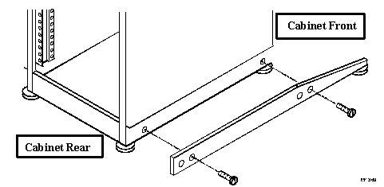
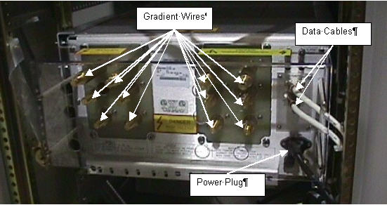
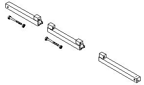
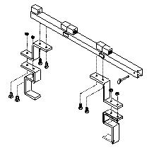
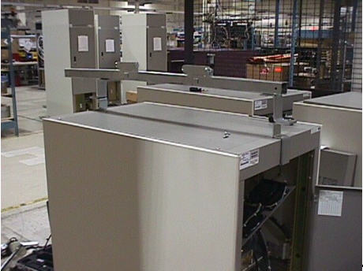
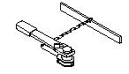
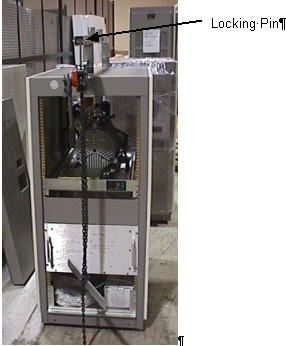
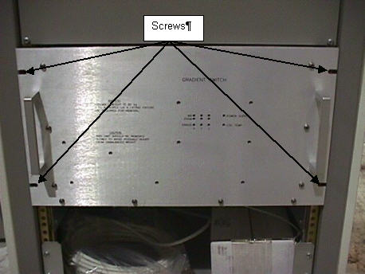
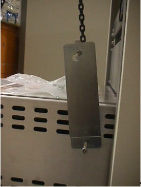

Operating Documentation
Direction 5133330-3, Rev# 14
Signa EXCITE HD 3.0T Service Methods
Module Version 1.0, Version Date 5/3/07
Operating Documentation |
| Required Persons | Preliminary Reqs | Procedure | Finalization |
|---|---|---|---|
| 1 |
| Item | Qty | Effectivity | Part# | Manufacturer | |
|---|---|---|---|---|---|
| Universal Lift Hoist Kit | 1 | - | 46-317266G5 | - | |
| Gradient Switch | 1 | - | - | - | |
| Small hand tools including a Phillips-head screwdriver | 1 | - | - | - | |
| Medium-sized crescent wrenches | 1 | - | - | - | |
| Item | Qty | Effectivity | Part# | Manufacturer | |
|---|---|---|---|---|---|
| Gradient Switch | 1 | - | - | - | |
| ||||
| Possible personal injury! | ||||
| Electrocution | ||||
| Remove power from the TAC cabinet before attempting to remove the Gradient Switch. Verify that the RFI/Amp and SSM breakers on the front of the PDU are off. Lock and tag out the plexiglas cover on the front of the PDU. |
| ||||
| Possible personal injury! | ||||
| Cabinet tip hazard | ||||
| Confirm that the aluminum anti-tip legs stored in the rear of the cabinet are installed on either side of the base of the cabinet before attempting to remove an RF amplifier. |
| NOTE: | Verify that all hardware is securely fastened; all bolts and nuts must be tight prior to attaching the hoist assembly to the lift kit. |
Lock out and tag out the TAC cabinet. See, OSHA LOCKOUT/TAGOUT REQUIREMENTS.
Using the screws included with the anti-tip legs, secure the aluminum anti-tip legs to the threaded holes on each side of the base of the TAC Cabinet. See Illustration 1.
Illustration 1: Installing Anti-Tip Legs on Sides of Cabinet

Remove the front cover and the top bracket from the TAC cabinet.
Open the rear TAC cabinet door.
Remove the four (4) screws that attach the fan module to the TAC cabinet. Set the fan module in the cabinet.
Remove the 12 gradient wires, 2 data cables, and power plug from the back of the Gradient Switch. See Illustration 2.
Illustration 2: Rear of Gradient Switch

Locate and open the Universal Lift Hoist Kit.
| NOTE: | The Universal Lift Hoist is assembled from parts stored in the Universal Lift Hoist Kit. |
Locate the three (3) large Steel Rail sections and place them on a flat surface for assembly. See Illustration 3.
Illustration 3: Steel Rail Sections, Hex Bolts, and Hex Nuts

Arrange the rail sections in the proper order (rear, center, then front) and fasten them together with 4.75” X 1/2” caps crews and hex nuts.
Use the crescent wrenches to tighten the cap screws.
Assemble and fasten the elevating brackets to the rail assembly. See Illustration 4.
Illustration 4: Hoist Top Rail Parts with Elevating Brackets

Center the Steel Rail and elevating bracket assembly at the top of TAC Cabinet so the hoist assembly will face the front of the cabinet. See Illustration 5.
Illustration 5: Hoist Installed on TAC Cabinet

Tighten the bolts on the Steel Rail to secure it to the top of the cabinet.
Locate the Hoist Assembly in the Lift Kit. See Illustration 6.
Illustration 6: Hoist Assembly

Insert the Hoist Assembly into the open end of the front rail. Insert a locking pin into the holes near the front edge of the front rail. This locking pin prevents the Hoist Assembly from sliding out of the rails. See Illustration 7.
Illustration 7: Placement of Hoist Assembly Into Front End of Steel Rail Assembly

Remove the four (4) screws on the front of the Gradient Switch. See Illustration 8.
Illustration 8: Front of Gradient Switch

Use the two handles on the Gradient Switch to pull the Gradient Switch part way out of the cabinet.
Attach the two side brackets to the Gradient Switch using the bolts provided with the Universal Lift Kit. See Illustration 9.
Illustration 9: Hoist Side Brackets

Attach the hoist bracket to the side brackets.
Hoist the Gradient Switch out of the cabinet and place it safely on the floor.
Disconnect the hoist bracket from the side brackets and remove the side brackets from the Gradient Switch.
Attach the hoist side brackets to the Gradient Switch. See Illustration 9.
Attach the hoist bracket to the side brackets.
Hoist the Gradient Switch up and slide it part way into the TAC Cabinet.
Remove the hoist bracket and side brackets from the Gradient Switch.
Slide the Gradient Switch all the way into the cabinet.
Install the four (4) bolts that attach the Gradient Switch to the TAC Cabinet. See Illustration 8.
Attach the 12 gradient wires, 2 data cables, and power plug to the back of the Gradient Switch. See Illustration 2.
Remove the hoist assembly from front rail. See Illustration 7.
Loosen the bolts that secure the Steel Rail to the top of the cabinet.
Remove the Steel Rail from the cabinet.
Replace the top bracket and front cover for the TAC Cabinet.
Replace the fan module and secure with four (4) screws.
Close the rear TAC cabinet door.
Remove the anti-tip legs. SeeIllustration 1.
Remove the lock out and tag out for the TAC Cabinet.
Disassemble and return the Universal Lift Hoist Kit components to the case.
No finalization steps.